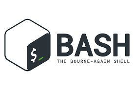

Introduction to Bash Scripting: Unleashing the Power of the Command Line

Bash scripting is the art of writing scripts for the Bash shell—a command language interpreter widely used on Linux and macOS systems. It allows you to automate tasks, manage files, and streamline your workflow directly from the command line.
What is Bash Scripting?
Bash scripting involves writing a series of commands in a text file that the Bash shell executes. These scripts can perform a wide range of tasks from simple file operations to complex system administration routines. The ability to automate repetitive tasks makes bash scripting a vital skill for system administrators and developers alike.
Why is Bash Scripting Important?
The importance of bash scripting lies in its efficiency and flexibility:
- Automation: Automate routine tasks such as backups, system updates, or file management.
- Efficiency: Save time by combining multiple commands into a single script.
- Customization: Tailor scripts to meet specific system needs and workflows.
- Simplicity: Write simple yet powerful scripts without the overhead of more complex programming languages.
What Can You Do with Bash Scripting?
With bash scripting, you can:
- Automate daily tasks such as cleaning temporary files or managing system resources.
- Create custom command-line tools to simplify your workflow.
- Schedule tasks with cron jobs for regular maintenance and updates.
- Quickly process text, logs, and other data through pipelines and redirection.
A Simple Bash Script Example
Below is a basic bash script that prints a greeting message. Save it to a file (e.g., hello.sh), give it execute permissions with chmod +x hello.sh, and run it:
#!/bin/bash
echo "Hello, Bash Scripting World!"
Conclusion
Bash scripting is an essential skill that empowers you to automate tasks and customize your computing environment. This post marks my first deep dive into bash scripting, and I’m excited to share more articles and advanced techniques in the near future. Stay with us to learn more and master the art of bash scripting!